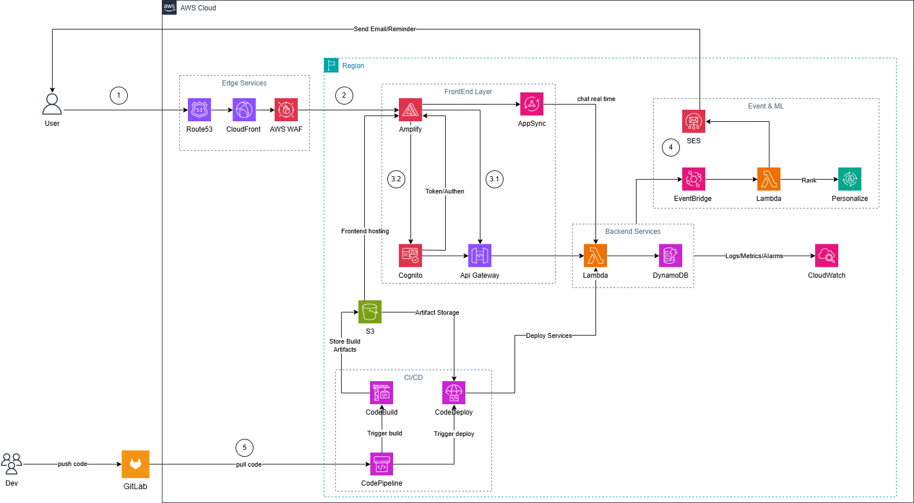

The Serverless Student Management System is a student management platform built on AWS Serverless Architecture, simulating a simple data management system for educational institutions and small businesses. The system automates CRUD (Create, Read, Update, Delete) processes for student information, utilizing services such as API Gateway, Lambda, DynamoDB, Cognito, S3, Amplify, and CloudWatch. It adds real-time chat features using AWS AppSync, student diligence ranking with AWS Personalize, automated notifications via AWS SES, and exam event processing (such as updating test scores, exam schedules) through Amazon EventBridge to trigger automation.
Key Benefits:
Current Situation:
Small businesses and educational institutions face difficulties managing student data due to lack of infrastructure knowledge, lack of centralized management tools, and high costs of traditional systems such as self-managed servers or on-premise databases. Additionally, the lack of real-time communication features leads to delayed communication, absence of incentive mechanisms like diligence ranking, and manual exam event processing (such as updating scores, exam reminders).
Proposed Solution:
The system provides a serverless management system on AWS with capabilities:
Expected Effectiveness:
The system is designed following the AWS Well-Architected Framework with interconnected layers, ensuring data management capabilities, authentication, monitoring, real-time communication, ML ranking, notifications, and continuous event processing. The serverless architecture helps optimize costs and ensures automatic scalability.

| Service | Primary Function | Key Benefits |
|---|---|---|
| Amazon API Gateway | Handle API requests and connect frontend-backend | Support RESTful APIs, throttling and caching to improve performance |
| AWS Lambda | Execute CRUD logic without servers | Auto-scale, pay-per-use, reduce operational costs |
| Amazon DynamoDB | Store NoSQL data for student information and chat messages | Fast queries, auto-scale, support GSI for complex searches |
| Amazon Cognito | Manage user authentication and authorization | Support MFA, JWT tokens, easy integration with frontend |
| Amazon S3 | Store static files for frontend dashboard | Cheap static website hosting, high durability |
| Amazon CloudFront | CDN distribution for static website and frontend resources | Reduce global latency, Edge caching, HTTPS, support HTTP/2 and HTTP/3, integrate WAF/Shield, custom domain (ACM), OAC protects S3 |
| AWS Amplify | Deploy and host frontend dashboard with CI/CD | Easy build/deploy web apps, seamless integration with Cognito and AppSync |
| Amazon CloudWatch | Monitor system logs and metrics | Real-time monitoring, alarms to detect issues early |
| AWS AppSync | Support GraphQL API with subscriptions for realtime chat | Real-time data updates via WebSockets, easy integration with DynamoDB and Lambda |
| AWS Personalize | Build ML models to rank students based on activity data | Personalized ranking, auto-learn from data, support real-time inference |
| AWS SES | Send ranking notification emails and system updates | Easy integration with Lambda, support millions of emails/month, low cost |
| AWS CodePipeline | Manage CI/CD pipeline to deploy code and infrastructure | Automate deployment, integrate with GitHub/Amplify, reduce manual errors |
| Amazon EventBridge | Route events from management web to process exams (update scores, reminders) | Event-driven architecture, integrate with Lambda to automate workflows |
1. Frontend Layer (User Interface Layer)
Static Hosting & Delivery
├── Amazon S3 (Static file storage)
├── Amazon CloudFront (CDN distribution)
├── React/Vue Dashboard (CRUD UI with authentication, chat interface & ranking display)
2. Authentication Layer (Authentication Layer)
User Management & Security
├── Amazon Cognito (User pools & app clients)
├── MFA & JWT Tokens (Secure access for admins/lecturers/students)
├── Integration with API Gateway/AppSync (Authorization)
3. API & Logic Layer (Logic Processing Layer)
Serverless Backend
├── Amazon API Gateway (RESTful endpoints: /students, /courses)
├── AWS AppSync (GraphQL: queries, mutations, subscriptions for chat)
├── AWS Lambda (CRUD, chat logic, ranking trigger, email send)
├── Custom Code (Node.js/Python for validation, processing & SES integration)
4. Data Storage Layer (Data Storage Layer)
NoSQL Database
├── Amazon DynamoDB (Tables: Students, Courses, Messages, Interactions)
├── Partition Keys & GSIs (Efficient querying for chat & ranking data)
├── Backup & TTL (Data protection & cleanup for old messages)
5. ML & Ranking Layer (Intelligent Ranking Layer)
Personalized Recommendation Pipeline
├── AWS Personalize (Datasets: Users, Items=SinhVien, Interactions=HoatDong)
├── Lambda Trigger (Import data from DynamoDB, train model)
├── GetPersonalizedRanking API (Re-rank student list by "diligence")
6. Notification Layer (Notification Layer)
Automated Alerts
├── AWS SES (Send emails with templates)
├── Lambda Function (Trigger from EventBridge on ranking updates)
├── Integration with SNS (For fallback SMS if needed)
7. Monitoring Layer (Monitoring Layer)
Observability
├── Amazon CloudWatch (Logs, metrics, alarms)
├── X-Ray Integration (Tracing if extended)
├── Dashboards (Real-time insights)
The project follows a 10-week internship plan, divided into 6 main phases, focusing on AWS Serverless services, real-time, ML, and data integration.
1. Foundation & Setup (Weeks 1–2)
Create AWS account, configure IAM roles, and set up DynamoDB tables using CloudFormation.
Set up baseline (Cognito user pools, S3 bucket).
2. Core Backend Deployment (Weeks 3–4)
Deploy Lambda functions for CRUD, connect API Gateway and AppSync.
Configure authorization with Cognito, add GraphQL schema for chat.
3. Frontend & Integration (Weeks 5–6)
Upload dashboard code to S3, configure CloudFront.
Integrate frontend with API, AppSync subscriptions for real-time chat, and Cognito.
4. ML & Ranking Integration (Week 7)
Configure AWS Personalize with datasets from DynamoDB.
Deploy Lambda to train model and get rankings.
5. Notification & Monitoring (Week 8)
Integrate AWS SES with Lambda for email notifications.
Set up CloudWatch logs and alarms.
6. Testing & Optimization (Weeks 9–10)
End-to-end testing with sample data, including chat, ranking, and email.
Optimize cost and performance, complete documentation and demo.
The project is implemented over 14 weeks (from September to December 2025), divided into 6 main phases following the Agile model.
| Phase | Timeline | Main Objective | Deliverables | Success Criteria |
|---|---|---|---|---|
| Phase 1: Foundation Setup | Weeks 1–2 | Set up AWS environment | • AWS account setup • DynamoDB & Cognito config • IaC templates |
• AWS infrastructure working stably |
| Phase 2: Backend Deployment | Weeks 3–5 | Build API and logic | • Lambda functions • API Gateway & AppSync endpoints |
• CRUD & chat mutations working |
| Phase 3: Frontend Integration | Weeks 6–7 | Deploy dashboard & chat | • S3 + CloudFront hosting • Realtime subscriptions integration |
• Dashboard & chat accessible in real-time |
| Phase 4: ML & Ranking | Weeks 8-9 | Integrate Personalize | • Datasets import • Ranking API |
• Student ranking working |
| Phase 5: Notification & Monitoring | Weeks 10–11 | Integrate SES & monitoring | • Email notifications • CloudWatch alarms |
• Notifications sent accurately |
| Phase 6: Testing & Review | Weeks 12–14 | Testing and finalization | • End-to-end tests • Documentation & Demo |
• Stable system, complete demo |
You can view the cost on AWS Pricing Calculator or download the budget estimate file.
AWS Services:
| Service | Usage Description | Estimated Cost / month (USD) | Notes |
|---|---|---|---|
| Amazon API Gateway | Process ~1M API calls/month | ~$1.00 – $3.50 | HTTP APIs: $1.00/million calls; REST: $3.50/million; free tier 1M calls. |
| AWS Lambda | ~1M requests, 400k GB-seconds | ~$0.20 – $0.50 | Requests: $0.20/million; Duration: $0.0000166667/GB-second; free tier sufficient. |
| Amazon DynamoDB | ~25 GB storage, 2.5M reads/writes | ~$0.25 – $1.25 | Reads: $0.25/million; Writes: $1.25/million; Storage: $0.25/GB; free tier 25 GB. |
| Amazon Cognito | ~10k MAUs | ~$0.0055 – $0.015 | Essentials: $0.015/MAU; free tier 10k MAUs. |
| Amazon S3 | ~5 GB storage, low requests | ~$0.023 – $0.12 | Storage: $0.023/GB; Requests: $0.0004/1k GET; free tier credits. |
| Amazon CloudWatch | ~5 GB logs, 10 metrics/alarms | ~$0.03 – $0.50 | Logs: $0.50/GB ingestion; Storage: $0.03/GB; Metrics: $0.30/metric; free tier 5 GB. |
| AWS AppSync | ~1M queries/subscriptions, realtime chat | ~$0.50 – $2.00 | Requests: $4.00/million; Data transfer: $0.09/GB; free tier 250k requests. |
| AWS Personalize | Train model weekly, ~10k interactions | ~$0.50 – $5.00 | Training: $0.25/hour; Inference: $0.00005/request; Storage: $0.05/GB. |
| AWS SES | ~10k emails/month | ~$0.10 – $0.30 | $0.10/1k emails; free tier 62k emails/first month. |
| Amazon EventBridge | ~10k events/month, rules for exams | ~$0.10 – $0.50 | $1.00/million events; free tier 100k events/month. |
| AWS Amplify | Hosting dashboard, few builds/month | ~$0.00 – $1.00 | Build minutes: $0.01/minute; Hosting: $0.15/GB served; free tier available. |
| CodePipeline |
| Total cost / month (estimate) | Total 3 months (estimate) | Notes |
|---|---|---|
| ~$5 – $15 / month | ~$15 – $45 / 3 months | Depends on actual usage (chat, ranking, emails, events); leverage free tier. |
Based on NIST Risk Management Framework, the project team identifies key risks and mitigation measures.
| Risk Code | Description | Level | Mitigation |
|---|---|---|---|
| R1 – Data Leakage | Data exposure due to misconfiguration | High | Apply Cognito auth, IAM least privilege, DynamoDB encryption |
| R2 – API Overload | Too many requests causing slowdown | Medium | Throttling API Gateway/AppSync, CloudWatch alarms |
| R3 – Lambda Cold Start | Delay on invocation | Medium | Optimize code, Provisioned Concurrency if needed |
| R4 – Cost Overrun | Unusual usage increase (high chat, emails) | Medium | AWS Budgets alerts, monitor Cost Explorer |
| R5 – Service Downtime | AWS interruption | Low | Multi-AZ config, DynamoDB backups |
| R6 – Realtime Latency | Chat delay due to subscriptions | Medium | Use AppSync caching, test with high load |
| R7 – ML Accuracy | Inaccurate ranking due to poor data | Medium | Validate datasets, periodic retraining with Lambda |
| R8 – Event Processing Failure | Error routing exam events | Medium | Dead-letter queues for EventBridge, test rules |
Contingency Plan (Summary):
Technical Results:
Learning and Training Results:
Professional & Presentation Results:
Long-term Value:
Main Technical Documentation:
AWS Pricing Calculator Links:
CloudFormation Templates:
Training Materials:
Contact Information:
Success Metrics:
---
### 7. Đánh giá rủi ro
Dựa trên NIST Risk Management Framework, nhóm dự án xác định các rủi ro chính và biện pháp giảm thiểu.
| **Mã rủi ro** | **Mô tả** | **Mức độ** | **Giảm thiểu (Mitigation)** |
|----------------|------------|-------------|------------------------------|
| **R1 – Data Leakage** | Lộ dữ liệu do config sai | **Cao** | Áp dụng Cognito auth, IAM least privilege, DynamoDB encryption |
| **R2 – API Overload** | Quá nhiều requests gây chậm | **Trung bình** | Throttling API Gateway/AppSync, alarms CloudWatch |
| **R3 – Lambda Cold Start** | Delay khi invoke | **Trung bình** | Tối ưu code, Provisioned Concurrency nếu cần |
| **R4 – Chi phí vượt** | Usage tăng bất thường (chat, emails cao) | **Trung bình** | AWS Budgets alerts, monitor Cost Explorer |
| **R5 – Service Downtime** | Gián đoạn AWS | **Thấp** | Multi-AZ config, backups DynamoDB |
| **R6 – Realtime Latency** | Delay trong chat do subscriptions | **Trung bình** | Sử dụng AppSync caching, test với load cao |
| **R7 – ML Accuracy** | Xếp hạng không chính xác do data kém | **Trung bình** | Validate datasets, retrain định kỳ với Lambda |
| **R8 – Event Processing Failure** | Lỗi routing sự kiện kiểm tra | **Trung bình** | Dead-letter queues cho EventBridge, test rules |
**Contingency Plan (Tóm tắt):**
- Recovery: Sử dụng CloudFormation rebuild nhanh.
- Communication: CloudWatch alarms gửi email.
- Continuous Improvement: Review hàng tuần, bao gồm performance chat, ranking và event handling.
---
### 8. Kết quả kỳ vọng
**Kết quả kỹ thuật:**
- Hoàn thiện hệ thống serverless quản lý sinh viên với CRUD đầy đủ, chat realtime, ranking ML, thông báo email và xử lý sự kiện kiểm tra.
- Tích hợp API Gateway, Lambda, DynamoDB, Cognito, S3, Amplify, CloudWatch, AppSync, Personalize, SES, EventBridge.
- Thời gian response <1 giây, latency chat <2 giây, event processing <5 giây, uptime ≥99%.
- Chi phí thực tế ≤ $15/3 tháng.
**Kết quả học tập và đào tạo:**
- Người học nắm vững phát triển serverless, realtime apps và event-driven architecture.
- Chuẩn bị cho chứng chỉ AWS Developer Associate.
- Phát triển kỹ năng IaC, NoSQL, Authentication, GraphQL, Personalization, Events.
**Kết quả chuyên môn & trình bày:**
- Báo cáo kèm dashboard, chat, ranking, email và event demo.
- Demo CRUD, chat thời gian thực, thông báo và xử lý sự kiện kiểm tra.
- Tài liệu hướng dẫn triển khai.
**Giá trị dài hạn:**
- Dễ mở rộng sang mobile app hoặc AI analytics nâng cao.
- Nền tảng cho lab đào tạo serverless, realtime và event-driven.
---
### 9. Tài liệu tham khảo và Phụ lục
**Tài liệu kỹ thuật chính:**
- [AWS Serverless Application Model (SAM)](https://docs.aws.amazon.com/serverless-application-model/)
- [AWS Well-Architected Framework](https://docs.aws.amazon.com/wellarchitected/)
- [DynamoDB Best Practices](https://docs.aws.amazon.com/amazondynamodb/latest/developerguide/best-practices.html)
- [AWS AppSync for Realtime Apps](https://aws.amazon.com/appsync/)
- [AWS Personalize Developer Guide](https://docs.aws.amazon.com/personalize/)
- [AWS SES Developer Guide](https://docs.aws.amazon.com/ses/)
- [AWS Amplify Hosting](https://aws.amazon.com/amplify/)
- [Amazon EventBridge User Guide](https://docs.aws.amazon.com/eventbridge/)
**AWS Pricing Calculator Links:**
- [Development Estimate](https://calculator.aws/#/estimate?id=dev-sms-2025)
**CloudFormation Templates:**
- GitHub Repository: serverless-student-management
**Training Materials:**
- Workshop Guide: "Building Serverless SMS with Realtime, ML & Notifications"
- Hands-on Labs: 15+ scenarios incl. chat, ranking
**Contact Information:**
- Project Team: [Tên nhóm]
- Technical Lead: [Tên bạn]
- Institution: [Trường]
- Email: [Email]
- Project Repository: [GitHub URL]
**Success Metrics:**
- System Uptime: 99%
- Response Time: <1s
- Chat Latency: <2s
- Cost Control: <$15
- Learning: 10+ services mastered